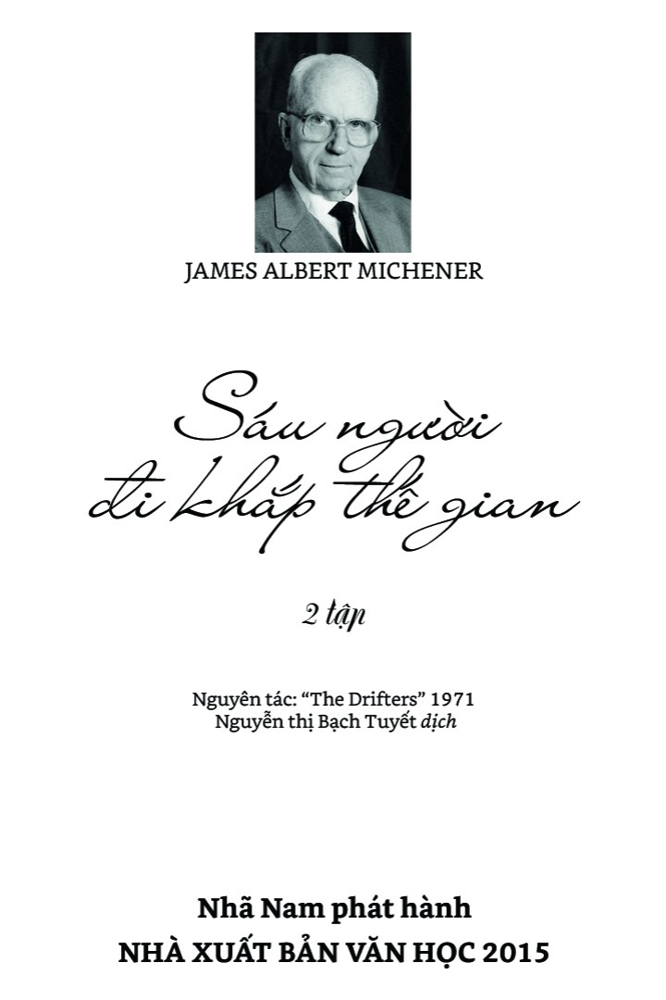

Họ là bốn người Mỹ, một cô gái Na Uy, một cô gái Anh. Chiến tranh Việt Nam, chiến tranh Trung Đông, nạn phân biệt chủng tộc, đạo Hồi và những bóng ma của quá khứ đã xô đẩy họ trôi dạt tới thành phố mặt trời, để rồi, từ nơi đây, họ lại bắt đầu hành trình phiêu lưu mới đến với những đêm phương Nam Tây Ban Nha vò xé tâm can, những trận đấu bò rừng ngàn cân treo sợi tóc, những thành lũy Bồ Đào Nha thách thức thời gian, những rừng rậm châu Phi đầy ám ảnh, những bão táp cuộc đời và những tan vỡ trong lòng người… Không tìm bất cứ góc cạnh nào để ẩn náu, họ đã cùng nhau đối diện với cuộc đời trong cuộc Thập Tự Chinh kiếm tìm những giá trị mới…
Như một bách khoa thư kết hợp nhuần nhuyễn súng ống và hoa hồng, tình yêu và tình dục, tôn giáo và nghệ thuật, du hành và ma túy, những bản ballad say lòng và tiếng kêu thầm xé ruột, có thể nói “Sáu người đi khắp thế gian” là một cuốn tiểu thuyết độc nhất vô nhị không bao giờ cũ về cuộc sống…
James Albert Michener là nhà văn nổi tiếng người Mỹ với trên 40 đầu sách. Ông từng học và giảng dạy ở nhiều trường đại học, nhận bằng Thạc sĩ Văn chương năm 1937 và có hơn 30 học vị Tiến sĩ Danh dự về Nhân văn, Luật, Thần học, Khoa học.
Các tác phẩm của Michener bán được gần 80 triệu bản trên khắp thế giới, nhiều lần được chuyển thể thành phim và nhận rất nhiều giải thưởng văn học uy tín (Giải Pulitzer, giải Franklin, Huy chương Vàng của Viện Nghiên cứu Tây Ban Nha, Giải Einstein của Einstein Medical College...).
Michener đã tặng hơn 100 triệu đô la tiền nhuận bút cho một số trường đại học, thư viện, viện bảo tàng, chương trình nghiên cứu... Bảo tàng Nghệ thuật ở Doylestown, Pensylvania, quê ông, mang tên Michener.
Sáu người đi khắp thế gian (tên gốc The Drifters) được xuất bản năm 1971 và suốt sáu tháng liền nằm trong danh sách những tác phẩm bán chạy nhất New York.
“Đặc biệt thấu hiểu giới trẻ.”
• Christian Science Monitor
“Cuốn tiểu thuyết giang hồ thượng hạng… và một tấm gương chân thực phản chiếu đời sống đương thời.”
• John Barkham Reviews
“Dường như chạm tới mọi khía cạnh của đời sống hiện đại.”
• Publishers Weekly
“Truyền tải nhận thức về một thời đại mới, một thế hệ mới… cung cấp cái nhìn thấu suốt vào tình hình ‘hiện tại’.”
• Chicago Sun-Times
“Cuốn sách bom tấn… tràn ngập sự bất ngờ, kịch tính và thú vị.”
• Philadelphia Bulletin
Đây là một cuốn tiểu thuyết. Các nhân vật đều được tác giả hư cấu và bất cứ điểm tương đồng nào đối với những người đang sống hay đã qua đời đều là sự trùng hợp ngẫu nhiên.
Ba trong số các khung cảnh địa lý cũng được hư cấu: nước Cộng hòa Vwarda, đèo Qarash và, để thu hút sự chú ý đối với các vấn đề môi trường, cả khu bảo tồn thiên nhiên Zambela nữa.
Tất cả những khung cảnh khác đều có thực, tuy nhiên các quán giải khát và quán rượu tại những nơi đó là tưởng tượng.
